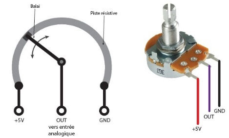
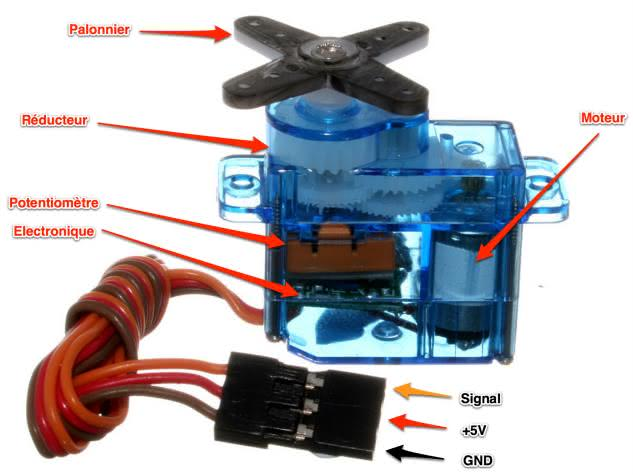
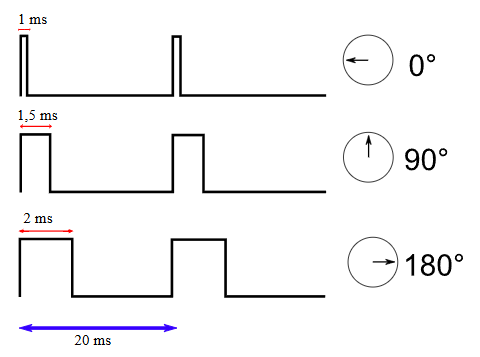
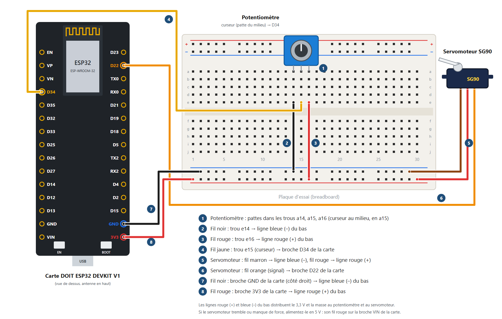
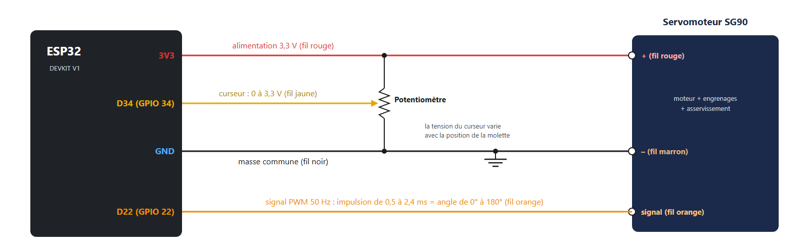

Travaux pratiques — IoT · 07
Piloter un servomoteur SG90 avec un potentiomètre : vos programmes dans l'Arduino IDE, puis le serveur web créé avec le générateur de tableau de bord, où le servomoteur suit la molette ou se commande depuis la page.
Ce qui vous est fourni
Votre travail : le câblage, vos trois programmes, la création du serveur web avec le générateur, les tests, l'exploitation des mesures et les questions.
Matériel | Remarque |
|---|---|
1 carte DOIT ESP32 DEVKIT V1 + câble micro-USB | Le câble doit permettre le transfert de données (pas seulement la charge) |
1 potentiomètre rotatif (3 broches) | Une résistance variable réglée avec une molette |
1 servomoteur SG90 | 3 fils : marron (GND), rouge (+), orange (signal) |
1 plaque d'essai + fils mâle-femelle et mâle-mâle | Côté femelle : sur les broches de la carte ; côté mâle : dans la plaque d'essai |
1 ordinateur avec l'Arduino IDE | Les cartes ESP32 sont déjà installées ; la bibliothèque ESP32Servo est installée à la partie 6 |
1 smartphone (ou l'ordinateur) avec un navigateur web | Connecté au même réseau Wi-Fi que la carte |
Un tableur (Excel ou LibreOffice Calc) | Pour exploiter le fichier CSV des mesures |
Un potentiomètre est une résistance variable : une molette fait varier sa valeur. Il a en général trois broches.

Figure 1 – Schéma d'un potentiomètre rotatif
Les broches extérieures se branchent sur l'alimentation (3,3 V) et sur la masse ; la broche centrale, le curseur, donne une tension entre 0 et 3,3 V selon la position de la molette. Elle se branche sur une entrée analogique de la carte (ici D34).
Lire une tension avec l'ESP32
analogRead(broche) convertit la tension de la broche en un nombre : c'est le convertisseur analogique-numérique (CAN) de la carte.
Sur l'ESP32, il travaille sur 12 bits : 0 pour 0 V, 4095 pour 3,3 V.
Tension (V) = valeur lue × 3,3 / 4095
Les servomoteurs, souvent appelés « servos », se placent à une position angulaire précise et la gardent jusqu'à une nouvelle consigne. Le SG90 a un couple de 1,5 kg·cm pour seulement 9 g.

Figure 2 – Le servomoteur SG90 et ses éléments
Caractéristique | Valeur |
|---|---|
Tension d'alimentation | 4,8 V conseillés (il tourne aussi en 3,3 V, plus lentement) |
Couple | 1,6 kg·cm sous 4,8 V |
Vitesse | 0,1 s pour 60° sous 4,8 V |
Angle de rotation | de 0° à 180° |
Masse | 9 g |
Dimensions | 23 mm × 12,2 mm × 29 mm |
Connectique | connecteur 3 fils : marron (GND), rouge (+), orange (signal) |
Contrairement à un moteur classique, un servomoteur de base ne tourne qu'entre 0° et 180°. Il contient un moteur à courant continu, des engrenages qui augmentent le couple (et réduisent la vitesse), un potentiomètre qui mesure la position, et une électronique d'asservissement.
On le commande avec un signal modulé en largeur d'impulsion (PWM) à 50 Hz : une impulsion toutes les 20 ms. La durée de l'impulsion fixe l'angle : environ 1 ms pour 0°, 1,5 ms pour 90° et 2 ms pour 180°. La bibliothèque ESP32Servo fabrique ce signal pour vous.

Figure 3 – La durée de l'impulsion fixe l'angle du servomoteur
Rappels

Figure 4 – Câblage du potentiomètre et du servomoteur (les numéros correspondent à la légende)

Figure 5 – Schéma électrique : le potentiomètre en diviseur de tension, et le servomoteur
Faites vérifier votre câblage par l'enseignant avant de brancher la carte.
Avant de créer le serveur web, vérifiez le câblage et le fonctionnement de chaque composant avec des programmes que vous écrivez vous-même.
Lire_Potentiometre, et choisissez la carte (Outils > Carte > esp32 > DOIT ESP32 DEVKIT V1) et le port (Outils > Port).analogRead(34) renvoie la valeur lue.Moniteur série à 115200 bauds et tournez la molette d'un bout à l'autre : relevez la valeur minimale et la valeur maximale.Notez sur votre feuille les valeurs minimale et maximale lues.
Outils > Gérer les bibliothèques…, cherchez ESP32Servo (auteur : Kevin Harrington), puis cliquez sur Installer.Balayage_Servo. Écrivez un programme qui fait tourner le servomoteur de 0° à 180°, degré par degré, puis revient à 0°, sans s'arrêter. Aide : #include <ESP32Servo.h> en haut du programme ; Servo sg90; déclare le servomoteur ; dans setup(), sg90.setPeriodHertz(50); puis sg90.attach(22, 500, 2400); (impulsion de 0,5 ms pour 0° à 2,4 ms pour 180°) ; sg90.write(angle) le place à un angle ; une boucle for et delay(10) font le balayage.Servo_Potentiometre. Écrivez un programme qui place le servomoteur à un angle proportionnel à la position de la molette : 0° quand le potentiomètre est au minimum, 180° au maximum. Aide : angle = valeur lue × 180 / 4095, ou map(valeur, 0, 4095, 0, 180).Le programme du serveur web, vous le créez sans le programmer, avec le générateur de tableau de bord. Il sait lire le potentiomètre et faire suivre le servomoteur, ou commander le servomoteur depuis la page.
Generateur_Page_Web_ESP32_etudiant.html, ou celdobigeon.github.io/IoT) et choisissez « Page vide »..ino dans l'Arduino IDE et téléversez-le. Si le téléchargement ne démarre pas, utilisez « Copier le programme » et collez-le dans un nouveau croquis.Moniteur série (115200 bauds) et appuyez sur le bouton EN : l'adresse IP s'affiche.Notez sur votre feuille l'adresse IP de votre carte (par exemple 192.168.1.42) : vous en aurez besoin pour ouvrir la page.
Variante : commander le servomoteur depuis le téléphone
map() puis constrain().Serial.parseInt() lit un nombre entier.Problème | Solution |
|---|---|
La carte n'apparaît pas dans Outils > Port | Vérifier le câble micro-USB (données), installer le pilote USB (CP210x), changer de port USB. |
Le téléversement bloque sur « Connecting… » | Maintenir le bouton BOOT enfoncé au début du téléversement. |
Erreur de compilation « ESP32Servo.h: No such file or directory » | La bibliothèque ESP32Servo n'est pas installée : refaire l'étape 1 de « Faire tourner le servomoteur » (partie 6). |
La valeur lue reste à 0 ou à 4095 | Vérifier le curseur (patte du milieu) sur D34 et les deux autres pattes sur 3,3 V et GND. |
Le servomoteur ne bouge pas | Vérifier le fil orange sur D22, la masse commune (fil marron et GND de la carte sur la ligne bleue) et l'alimentation (fil rouge). |
Le servomoteur tremble ou force | Alimenter le servomoteur en 5 V (fil rouge sur VIN) ; ne pas bloquer le palonnier à la main. |
Des points s'affichent sans fin dans le moniteur série | La carte ne trouve pas le réseau Wi-Fi : vérifier le nom et le mot de passe saisis dans le générateur, puis prévenir l'enseignant. |
La page ne s'ouvre pas | Vérifier que le téléphone est sur le même Wi-Fi et que l'adresse commence par http:// (et non https://). |